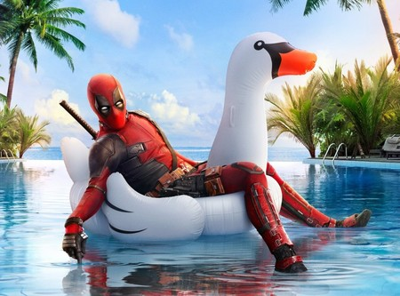

Deadpool es una película de superhéroes estadounidense basada en el personaje de Marvel Comics del mismo nombre y dirigida por Tim Miller. La película es un spin-off derivado de los X-Men protagonizada por Ryan Reynolds, Morena Baccarin, Ed Skrein, T. J. Miller, Gina Carano, Leslie Uggams, Brianna Hildebrand y Stefan Kapičić. En Deadpool, después de ser sometido a un experimento que deja a Wade Wilson con nuevas habilidades y con un retorcido sentido del humor, Wilson persigue al hombre que casi destrozó su vida. La película se estrenó en IMAX.
Y es que más que la acción, en ‘Deadpool’ lo que impera es la comedia desaforada que arranca desde los créditos de inicio con un personaje que no se toma nada en serio y que, aprovecha el mismo recurso del cómic de romper la cuarta pared, abriendo la posibilidad de mezclar el universo ficcional con el real, con un Ryan Reynolds que, como si de un artista de stand up se tratara, no para de hablar y hacer chistes de todo y contra todos, siendo Reynolds uno de los varios grandes aciertos del filme. Más en la línea de ‘Ant-Man’ y ‘Guardianes de la Galaxia’, Marvel consigue refrescar sus productos con un personaje que promete algunas nuevas y divertidas película. Y como siempre, permanecer en la sala hasta después de los créditos.